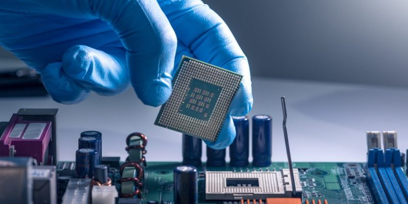
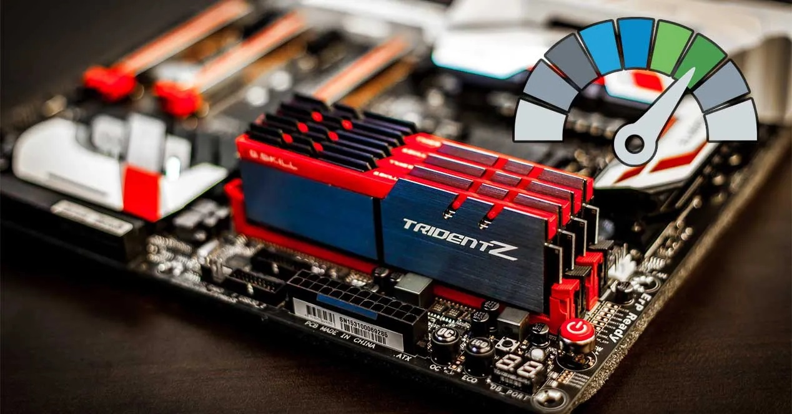
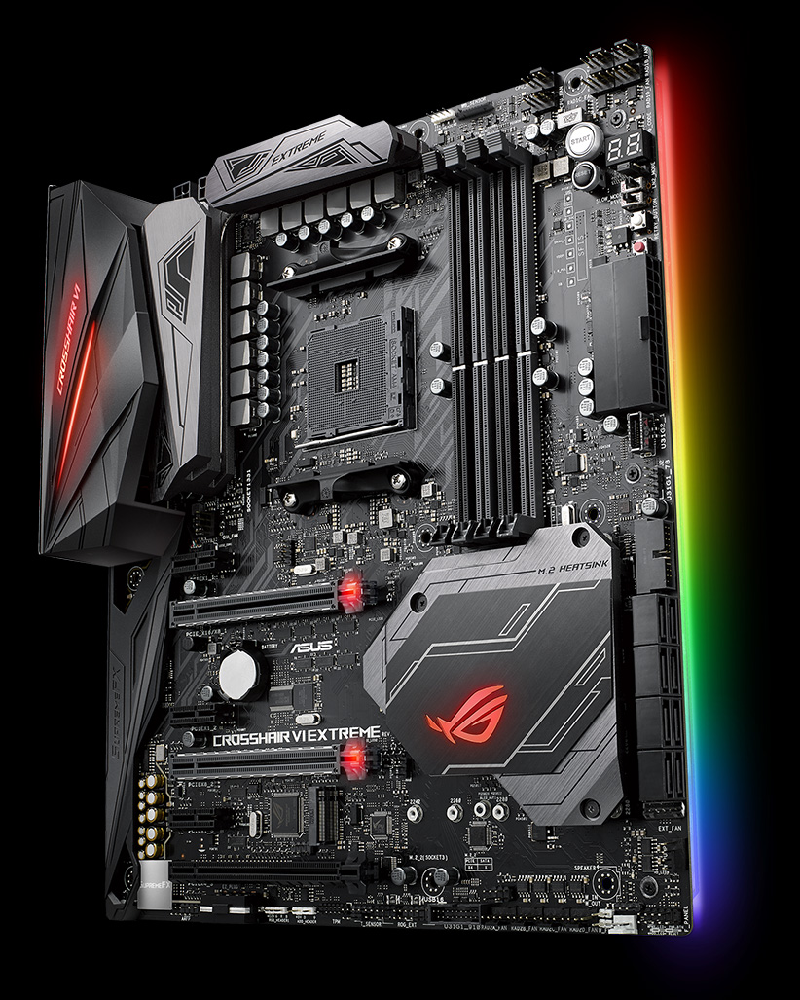

Procesador
La unidad central de procesamiento (conocida por las siglas CPU, del inglés: Central Processing Unit), es el hardware
dentro de un ordenador u otros dispositivos programables, su trabajo es interpretar las instrucciones de un programa
informático mediante la realización de las operaciones básicas aritméticas, lógicas y externas (provenientes de la
unidad de entrada/salida). Su diseño y avance ha variado notablemente desde su creación, aumentando su eficiencia y
potencia, y reduciendo aspectos como el consumo de energía y el costo.
Un ordenador puede contener más de una CPU (multiprocesamiento). En la actualidad, los microprocesadores están
constituidos por un único circuito integrado (chip) aunque existen los procesadores multinúcleo (varias CPU en un solo
circuito integrado). Un circuito integrado que contiene una CPU también puede contener los dispositivos periféricos, y
otros componentes de un sistema informático; similar a un microcontrolador (menos potente en RAM) se le denomina sistema
en un chip (SoC).

Memoria Ram
La memoria de acceso aleatorio (Random Access Memory, RAM) se utiliza como memoria de trabajo de computadoras y otros
dispositivos para el sistema operativo, los programas y la mayor parte del software. En la RAM se cargan todas las
instrucciones que ejecuta la unidad central de procesamiento (CPU) y otras unidades del computador, además de contener
los datos que manipulan los distintos programas.
Se denominan «de acceso aleatorio» porque se puede leer o escribir en una posición de memoria con un tiempo de espera
igual para cualquier posición, no siendo necesario seguir un orden para acceder (acceso secuencial) a la información de
la manera más rápida posible.
Durante el encendido de la computadora, la rutina POST verifica que los módulos de RAM estén conectados de manera
correcta. En el caso que no existan o no se detecten los módulos, la mayoría de tarjetas madres emiten una serie de
sonidos que indican la ausencia de memoria principal. Terminado ese proceso, la memoria BIOS puede realizar un test
básico sobre la memoria RAM indicando fallos mayores en la misma.

Tarjeta Madre
La placa base, también conocida como tarjeta madre, placa madre o placa principal (motherboard o mainboard en inglés),
es una tarjeta de circuito impreso a la que se conectan los componentes que constituyen la computadora.
Es una parte fundamental para montar cualquier computadora personal de escritorio o portátil o algún dispositivo. Tiene
instalados una serie de circuitos integrados, entre los que se encuentra el circuito integrado auxiliar (chipset), que
sirve como centro de conexión entre el microprocesador (CPU), la memoria de acceso aleatorio (RAM), las ranuras de
expansión y otros dispositivos.
Está instalada dentro de una carcasa o gabinete que por lo general está hecha de chapa y tiene un panel para conectar
dispositivos externos y muchos conectores internos y zócalos para instalar componentes internos.
La placa base, además incluye un firmware llamado BIOS, que le permite realizar las funcionalidades básicas, como
pruebas de los dispositivos, vídeo y manejo del teclado, reconocimiento de dispositivos y carga del sistema operativo.

Sistemas Operativos
Un sistema operativo (SO o, frecuentemente, OS —del inglés operating system—) es el software principal o conjunto de
programas de un sistema informático que gestiona los recursos de hardware y provee servicios a los programas de
aplicación de software, ejecutándose en modo privilegiado respecto de los restantes.
Uno de los propósitos del sistema operativo que gestiona el núcleo intermediario consiste en gestionar los recursos de
localización y protección de acceso del hardware, hecho que alivia a los programadores de aplicaciones de tener que
tratar con estos detalles. La mayoría de aparatos electrónicos que utilizan microprocesadores para funcionar, llevan
incorporado un sistema operativo (teléfonos móviles, reproductores de DVD, computadoras, enrutadores, etc.). En cuyo
caso, son manejados mediante una interfaz gráfica de usuario, un gestor de ventanas o un entorno de escritorio, si es un
celular, mediante una consola o control remoto si es un DVD y, mediante una línea de comandos o navegador web si es un
enrutador.
El sistema operativo de escritorio dominante es Microsoft Windows con una cuota de mercado de alrededor del 82,74%.
macOS de Apple Inc. ocupa el segundo lugar (13,23%), y las variedades de GNU/Linux están colectivamente en tercer lugar
(1,57%). En el sector móvil (incluidos teléfonos inteligentes y tabletas), la participación de Android es de hasta un
70% en el año 2020. Las distribuciones Linux son dominantes en los sectores de servidores y supercomputación.
Existen otras clases especializadas de sistemas operativos, como los sistemas integrados y en tiempo real, para muchas
aplicaciones.

Antivirus
Los antivirus son programas cuyo objetivo es detectar y eliminar virus informáticos. Con el transcurso del tiempo, los
antivirus han evolucionado hacia programas más avanzados que además de buscar y detectar virus informáticos consiguen
bloquearlos, desinfectar archivos y prevenir una infección de los mismos. Actualmente son capaces de reconocer otros
tipos de malware como spyware, gusanos, troyanos, rootkits, pseudovirus etc.
Ofimatica
Ofimática (acrónimo de oficina y de informática), a veces también llamado burótica, designa al conjunto de técnicas,
aplicaciones y herramientas informáticas que se utilizan en funciones de oficina para optimizar, automatizar, mejorar
tareas y procedimientos relacionados. Las herramientas ofimáticas permiten idear, crear, manipular, transmitir o
almacenar la información necesaria en una oficina.
Comenzó a desarrollarse en la década de los 70, con la masificación de los equipos de oficina que comienzan a incluir
microprocesadores, dejándose de usar métodos y herramientas por otras más modernas.
Mantenimiento Preventivo
Se podría definir al mantenimiento preventivo de una computadora como la necesidad de crear un ámbito de funcionamiento
favorable para el computador, es decir la necesidad llevar a cabo una serie de actividades para que el equipo de cómputo
se encuentre protegido ante cualquier problema.
Por ejemplo, la mayor parte de las computadoras suelen fallar debido a la acumulación de polvo sobre sus componentes o
rejillas de ventilación. Es por ello que se hace evidente la necesidad de mantenerlo limpio, tanto por dentro como por
fuera, como así también comprobar que todos sus periféricos, cables, adaptadores, estabilizadores y hardware se
encuentren en excelentes condiciones de uso.
También en esta comprobación deberíamos incluir el software de la computadora, es decir si están actualizados a la
última versión el sistema operativo, los programas de usuario y los controladores de dispositivos, ya que esto es de
mucha importancia al momento de evitarnos peligros con malware y otros programas malintencionados.
Mantenimiento Correctivo
Básicamente, el mantenimiento correctivo de una computadora se realiza con el objetivo de solucionar los problemas que
se suscitan con el uso del equipo, es decir reparar lo que se pueda haber averiado.
Este mantenimiento correctivo es la forma más simple de proporcionar mantenimiento a una computadora, ya que se realiza
una vez que el equipo ha fallado, y por lo general implica el recambio de alguno de los componentes del hardware.
En este punto es necesario destacar que existen dos tipos de mantenimiento correctivo: El mantenimiento correctivo
contingente y el mantenimiento correctivo programado.
El mantenimiento correctivo contingente, también llamado “No planificado”, es el mantenimiento que se lleva a cabo
exactamente luego de que ocurra un fallo en la computadora, y que es necesario realizar ya que de otra manera no se
puede utilizar.
Limpia tu PC
Muchos usuarios se preocupan de optimizar su PC internamente, sacando los virus, desinstalando los programas que son
poco utilizados y demás tareas, pero se olvidan de la parte más visible de la PC, que es su parte exterior. Una PC
debidamente limpia puede funcionar más rápido y aumentar su vida útil.
Todos sabemos que la limpieza de nuestra casa es algo que se debe realizar con cierta frecuencia. Es necesario recordar
que la PC forma parte de la lista de objetos que acumulan suciedad y necesitan ser limpiados.
Derechos reservados (2021)
David Carmelo Caballero Duerto
C.I 17863273